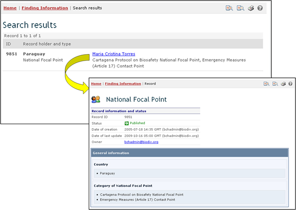

URL: http://bch.cbd.int/database/contacts/
Article 19 of the Protocol requires the designation of Competent National Authorities and National Focal Points. This information, as well as National Biosafety Websites and Databases, is searchable from the Search for National Contacts page.
The search page for information about National Contacts can be accessed from the link in the Finding Information drop down menu on the navigation bar, or from the link in the left-hand menu of the Finding Information page, or from the National Contacts link in the text of that page.
The National Contacts search interface enables the user to search for:
-
National Focal Points for the Cartagena Protocol on Biosafety (CPB-NFPs), who are responsible for liaising between the CBD Secretariat and their respective governments;
-
National Focal Points for the Biosafety Clearing-House (BCH-NFPs), who are responsible for liaising with the CBD Secretariat regarding the development and implementation of the BCH;
-
Emergency Measures Contact Points for receiving notifications under Article 17 of the Protocol;
-
Competent National Authorities, who are designated and authorized by governments to be responsible for performing the administrative functions required by Article 19 of the Protocol; and
-
National Biosafety Websites and Databases.

On the Search for National Contacts page there are several search criteria boxes:
-
Country: Selection list field for selecting a country
-
Region: Selection list field for selecting a region
-
Type of National Contact: Selection list field for narrowing the search results to specific types of national contacts
-
Date of record: Date field for narrowing the search results to a time interval
-
Keyword search: Keyword field for narrowing the results by keyword
See “Using the search pages” to learn about types of fields and their operation.
Example 1: A user may wish to identify the emergency measures contact points in Paraguay for issues related to unintentional transboundary movements of LMOs or emergency measures. By selecting Paraguay from the Country field and ‘Emergency Measures (Article 17) Contact Point’ from the Type of National Contact drop down menu, the user narrows the search results to the records most likely to provide the needed information.

When the Search button is clicked on, a page of search results shows which National Contacts in Paraguay have some responsibility for emergency measures. Clicking on the name of the focal point opens the record that contains the details for that national contact.

This picture was taken on February 2010 with the only purpose of providing an example on the usage of the BCH.
Example 2: A user may wish to identify all of the BCH Focal Points in countries that are members of the Association of Southeast Asian Nations (ASEAN). The user selects Asia-Pacific - Association of Southeast Asian Nations in the Region box and Biosafety Clearing-House Focal Point in the Type of National Contacts box. Clicking on the Search button displays a set of results showing the BCH Focal Points in the countries that are members of ASEAN.


This picture was taken on February 2010 with the only purpose of providing an example on the usage of the BCH.